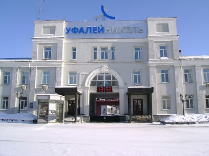

Промышленность Верхнего Уфалея
Открытое акционерное общество "Уфалейникель" - второй производитель никеля в России, его доля в объеме реализуемого металлического никеля на внутреннем рынке страны достигает 15% и 1% в мировом. "Уфалейникель" был первым в стране предприятием по производству никеля и первой опытно - производственной базой для разработки новых способов получения никеля и кобальта. Предприятие представляет собой комплекс с полным производственным циклом, начиная с добычи никелевой руды и заканчивая выпуском готовой продукции. Сегодня мощности предприятия позволяют выпускать до 15000 тонн металла в год.
Потребителями готовой продукции являются предприятия на всей территории Российской Федерации. Уфалейский никель экспортируется в европейские страны, США, Китай, Индию и Японию.
На сегодняшний день, рост технического уровня производства позволил повысить качество продукции. Никель и кобальт, произведенные на ОАО "Уфалейникель", имеют устойчивый спрос на мировом рынке.
